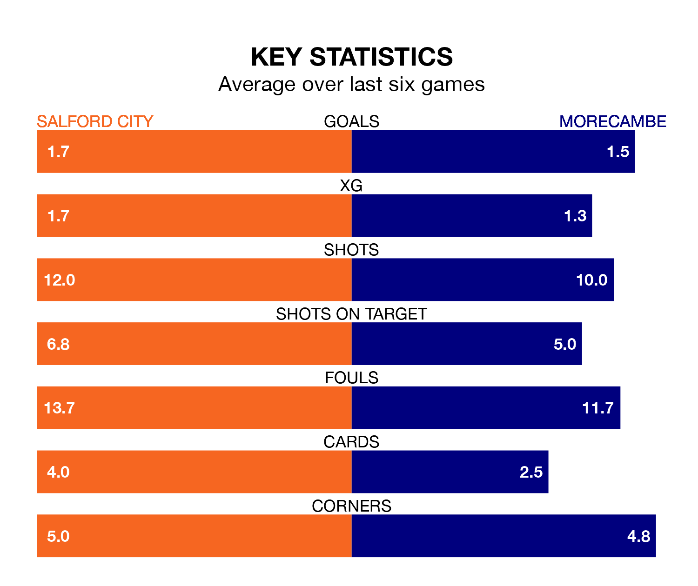

Salford City face Morecambe at the Peninsula Stadium on Sunday looking to secure a first win in six EFL League Two games.
The Ammies have lost three and drawn two matches since they last earned three points – against Barrow on February 17.
They face a Morecambe side who have won two and drawn one over that time.
In Matt Smith, Salford have the league's most on-form striker so far this season. He has notched 23 goals in 38 appearances.
His goal rate of one every 137 minutes is slightly quicker than that of Michael Mellon, Morecambe's top scorer with a goal every 134 minutes, and a total of 13 goals in 22 games.
With 56 goals in 37 games so far this season, the Shrimps are scoring at the league's average rate with 1.5 goals per game. And they are conceding more than average, letting in 62 goals at a rate of 1.7 per game.
City, meanwhile, are below average scorers, with 1.4 goals per game. They have conceded 1.9 goals per game.
The Ammies are 20th in the table after 38 games, of which they have won 10 and drawn 11, earning 41 points.
The away side are nine places ahead of the hosts in 11th, with 15 wins and nine draws putting them on 54 points.
In the last five years, Salford and Morecambe have played each other on five occasions. They won two each, and they drew once.
On average, the Ammies scored 1.4 goals and the Shrimps 1.2 in those matches.
Their last meeting was on September 2, when Morecambe won 1-0 at home.
Salford's last match was on Thursday, a 2-2 draw against Stockport County, with Curtis Tilt and Luke Garbutt getting the goals for the Ammies.
Morecambe lost 5-3 against Newport County last time out, on Tuesday, with Gwion Edwards (two) and Christopher Stokes on the scoresheet.
Updated: 15:10 (UTC), 15/03/24